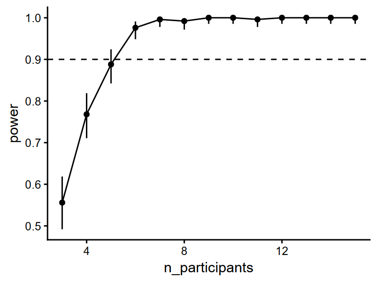
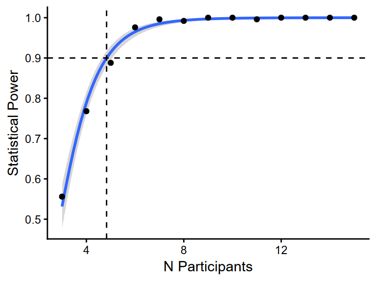
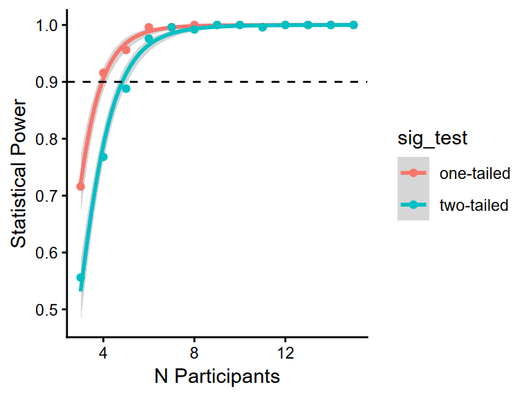
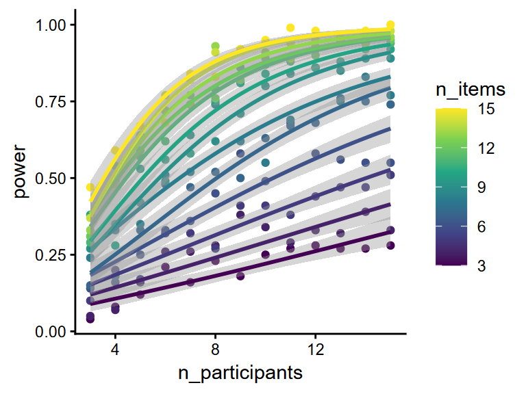
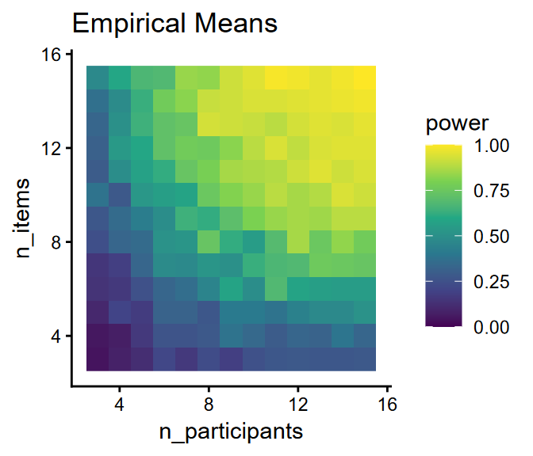
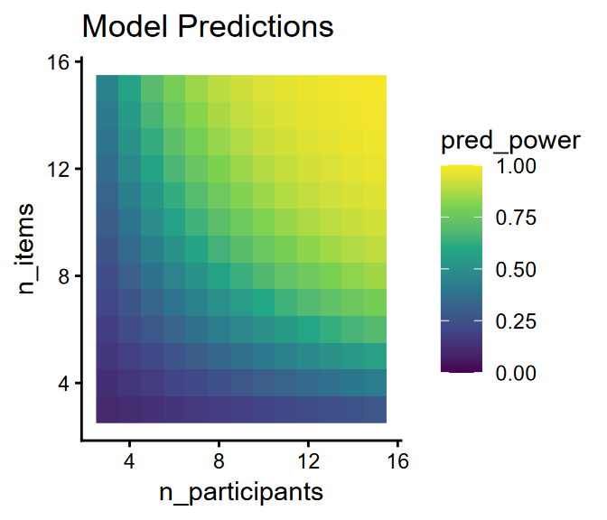

library(lme4) # for fitting LMMs
library(dplyr) # for data wrangling
library(tidyr) # for data wrangling
library(purrr) # for iterating
library(faux) # for simulating multivariate normals
library(lmerTest) # for calculating significance
library(broom.mixed) # for getting tidy summaries from models
library(parallel) # for parallelisation
library(ggplot2) # for plotting5 Power Analyses
5.1 Summary so far
Over the last few sections, we’ve built up code for simulating data from the following model:
\[\begin{aligned} logRT_{ip} &= \beta_0 + I_{0i} + P_{0p} + (\beta_1 + P_{1p}) Zipf_{ip} + e_{ip} \\\\ I_{0i} &\sim \mathcal{N}(0, \sigma_{I0}) \\\\ \begin{pmatrix} P_{0p} \\ P_{1p} \end{pmatrix} &\sim \mathcal{N}\!\left(\mathbf{0},\, \Sigma_P\right) \\\\ \Sigma_P &= \begin{pmatrix} \sigma^2_{P0} & \rho_P \sigma_{P0} \sigma_{P1} \\ \rho_P \sigma_{P0} \sigma_{P1} & \sigma^2_{P1} \end{pmatrix} \\\\ e_{ip} &\sim \mathcal{N}(0, \sigma_e) \end{aligned}\]
One of the ways in which we could apply this code is in power analyses. With a power analysis, we could ask:
“Assuming our simulated coefficients are correct, what is the probability of correctly detecting the effect of word frequency?”
Using multi-level simulations is a powerful way of conducting power analyses. In this section, we’ll build some code for conducting power analyses using the code we’ve built so far.
5.2 Packages
We’ll use the following packages in this section:
5.3 Modularising Code
To use the code we have come up with in a power analysis, we first want to modularise it. We want to write a self-contained function that takes our parameters as arguments, and returns simulated trials as an output
Functions in R have the following syntax:
multiply <- function(a, b) {
# calculate result
res <- a * b
# return the result by having the variable be the last line in the function
res
}Once a function is defined, we can call it to get the result:
multiply(23, 2)[1] 46We can also define default arguments in the function. For example, if we think that most of the time people use our function, they will want to double a number, we could set the default for b = 2. Then, if people don’t explicitly give a value for a, the function will use the default value of 2.
multiply <- function(a, b = 2) {
res <- a * b
res
}
multiply(4)[1] 8Using the code snippets from the last section, write a function, sim_trials(), that takes all free parameters as inputs and returns the simulated trials. I recommend setting all arguments to defaults based on the numbers we’ve used so far.
As a last step, the function should also scale the Zipf variable to promote model convergence.
Show solution
sim_trials <- function(
# all parameters with default values
n_items = 50, n_participants = 30,
b_0 = 6.85, b_1 = -0.1,
s_I0 = 0.08,
s_P0 = 0.16, s_P1 = 0.04,
r_P = -0.74,
s_e = 0.33
) {
# simulate items
items <- tibble(
i_id = 1:n_items,
zipf = runif(n_items, 1.5, 7.5),
I_0i = rnorm(n_items, 0, s_I0)
)
# simulate participants
participants <- rnorm_multi(
n = n_participants,
vars = 2,
varnames = c("P_0p", "P_1p"),
mu = c(0, 0),
sd = c(s_P0, s_P1),
r = r_P
) |>
mutate(p_id = 1:n_participants)
# generate trials
trials <- crossing(items, participants) |>
mutate(
e_ip = rnorm(n(), 0, s_e),
log_rt = b_0 + I_0i + P_0p + (b_1 + P_1p) * zipf + e_ip,
# also include a scaled version of the zipf variable
zipf_sc = scale(zipf)
)
# return the simulated trials
trials
}5.3.1 Example Usage
If your function is similar to mine, then we can call it to simulate some example data. If we don’t provide any inputs, it will use the defaults:
sim_trials()# A tibble: 1,500 × 9
i_id zipf I_0i P_0p P_1p p_id e_ip log_rt zipf_sc[,1]
<int> <dbl> <dbl> <dbl> <dbl> <int> <dbl> <dbl> <dbl>
1 1 7.45 -0.0200 -0.277 0.0509 25 0.188 6.37 1.68
2 1 7.45 -0.0200 -0.244 0.0584 22 0.262 6.54 1.68
3 1 7.45 -0.0200 -0.210 0.0564 5 -0.276 6.02 1.68
4 1 7.45 -0.0200 -0.154 0.0106 4 0.0740 6.08 1.68
5 1 7.45 -0.0200 -0.148 0.0143 17 -0.768 5.27 1.68
6 1 7.45 -0.0200 -0.101 0.000337 14 0.133 6.12 1.68
7 1 7.45 -0.0200 -0.0962 0.0139 10 -0.0169 6.08 1.68
8 1 7.45 -0.0200 -0.0948 0.00490 16 0.0814 6.11 1.68
9 1 7.45 -0.0200 -0.0740 -0.0387 6 -0.310 5.41 1.68
10 1 7.45 -0.0200 -0.0680 0.0907 1 0.132 6.82 1.68
# ℹ 1,490 more rowsOr, we can provide specific inputs to change them from the defaults. For example, here we simulate 250 participants, and increase the SD of random intercepts:
sim_trials(n_participants=250, s_P0=0.3)# A tibble: 12,500 × 9
i_id zipf I_0i P_0p P_1p p_id e_ip log_rt zipf_sc[,1]
<int> <dbl> <dbl> <dbl> <dbl> <int> <dbl> <dbl> <dbl>
1 1 6.19 -0.0292 -0.813 0.0250 192 -0.255 5.29 1.14
2 1 6.19 -0.0292 -0.705 0.0740 160 -0.254 5.70 1.14
3 1 6.19 -0.0292 -0.696 0.0189 176 0.0524 5.68 1.14
4 1 6.19 -0.0292 -0.673 0.109 117 0.0154 6.22 1.14
5 1 6.19 -0.0292 -0.668 0.0938 123 -0.113 6.00 1.14
6 1 6.19 -0.0292 -0.611 0.0566 145 0.349 6.29 1.14
7 1 6.19 -0.0292 -0.585 0.0249 83 0.405 6.18 1.14
8 1 6.19 -0.0292 -0.566 0.0239 135 0.0432 5.83 1.14
9 1 6.19 -0.0292 -0.534 0.0466 209 0.268 6.22 1.14
10 1 6.19 -0.0292 -0.520 0.0877 110 -0.553 5.67 1.14
# ℹ 12,490 more rows5.4 Hypothesis Testing
There are many ways to test hypotheses. Even within the null hypothesis significance testing approach, there are many ways to calculate a p value.
Wald p values are the p values printed in the model
summary()outputs forlme4models. They correspond to z values calculated as \(\beta/SE\). The p values then reflect the probability of seeing a z value at least as extreme as that observed, assuming the null hypothesis is true.Satterthwaite and Kenward-Roger p values are Wald p values, but with a correction to the degrees of freedom to address inflated false-positive rates.
Likelihood ratio tests provide p values for the significance of model comparisons. They capture whether data are significantly more likely to come from a model that includes the parameter of interest, relative to a simpler model that omits it. They reflect the probability of seeing a likelihood ratio at least as large as that observed, assuming that the models actually explain the data equally well.
These approaches differ in their power and false-positive rates. Satterthwaite and Kenward-Roger p values are generally the best calibrated tests, while Wald p values result in high false-positive rates (Luke 2017).
5.5 Convergence Issues
Let’s generate a dataset using the default parameters:
trials <- sim_trials()Next let’s fit a model with our full (“maximal”) mixed-effects formula:
m <- lmer(
log_rt ~ 1 + zipf_sc +
(1 | i_id) +
(1 + zipf_sc | p_id),
data = trials
)The model converges nicely. We can confirm this using an approach we saw briefly in the last section:
model_converged <- is.null(m@optinfo$conv$lme4$messages)
print(model_converged)[1] TRUEWhen running power simulations, we can use this to programmatically address convergence issues. Addressing any convergence issues in this way is valid if the rules we use to address convergence issues in the simulations are the same rules we actually plan to use in the eventual study.
5.6 Getting p Values
If you’ve loaded the lmerTest package, then the model summary will print tests for the fixed effects with degrees of freedom and p values.
summary(m)Linear mixed model fit by REML. t-tests use Satterthwaite's method [
lmerModLmerTest]
Formula: log_rt ~ 1 + zipf_sc + (1 | i_id) + (1 + zipf_sc | p_id)
Data: trials
REML criterion at convergence: 1083.5
Scaled residuals:
Min 1Q Median 3Q Max
-3.1089 -0.6932 -0.0022 0.6455 3.4914
Random effects:
Groups Name Variance Std.Dev. Corr
i_id (Intercept) 0.012143 0.11019
p_id (Intercept) 0.016894 0.12998
zipf_sc 0.004242 0.06513 0.35
Residual 0.107116 0.32729
Number of obs: 1500, groups: i_id, 50; p_id, 30
Fixed effects:
Estimate Std. Error df t value Pr(>|t|)
(Intercept) 6.46078 0.02962 48.27954 218.118 < 2e-16 ***
zipf_sc -0.17354 0.02135 57.31075 -8.128 4.06e-11 ***
---
Signif. codes: 0 '***' 0.001 '**' 0.01 '*' 0.05 '.' 0.1 ' ' 1
Correlation of Fixed Effects:
(Intr)
zipf_sc 0.155 We can get these results in a tidier format using the broom.mixed::tidy() function:
tidy(m, effects="fixed", ddf.method="Satterthwaite")# A tibble: 2 × 7
effect term estimate std.error statistic df p.value
<chr> <chr> <dbl> <dbl> <dbl> <dbl> <dbl>
1 fixed (Intercept) 6.46 0.0296 218. 48.3 6.06e-74
2 fixed zipf_sc -0.174 0.0214 -8.13 57.3 4.06e-115.7 Running Power Simulations
We now have everything we need to run some simulations to calculate power. Let’s calculate the statistical power to detect the effect of Zipf when we have 50 items and 50 participants, but the frequency effect is around 3 times smaller than we originally simulated. To make sure it finishes in a reasonable time, we’ll just run 250 simulations.
n_sims <- 250
# function for running a single simulation and returning the results
sim_res <- function(sim_nr, options = list()) {
# simulate data (also pass the list of options)
trials <- do.call(sim_trials, options)
# fit model
m <- lmer(
log_rt ~ 1 + zipf_sc +
(1 | i_id) +
(1 + zipf_sc | p_id),
data = trials
)
# detect whether converged (TRUE if converged)
m_converged <- is.null(m@optinfo$conv$lme4$messages)
# if not converged, refit with random correlations removed
if (!m_converged) {
removed_rcs <- TRUE # record that the random correlations were removed
m <- lmer(
log_rt ~ 1 + zipf_sc +
(1 | i_id) +
(1 + zipf_sc || p_id),
data = trials
)
} else {
removed_rcs <- FALSE # record that the random correlations were kept
}
# get tidy summary with Satterthwaite p values
res <- tidy(m, effects="fixed", ddf.method="Satterthwaite") |>
# only get the results for the zipf parameter (not also the intercept)
filter(term == "zipf_sc") |>
mutate(
# store the simulation number
sim_nr = sim_nr,
# store whether converged
converged = is.null(m@optinfo$conv$lme4$messages),
# store whether random correlations were removed
removed_rcs = removed_rcs
)
# add the non-default arguments as columns in the output
options_df <- as_tibble(options)
res <- bind_cols(res, options_df)
# return the dataframe
res
}
# run the simulations, passing the options as arguments to the function
sims <- lapply(
# pass the simulation numbers as the first argument
1:n_sims, sim_res,
# then pass the desired options as subsequent arguments
options = list("n_items"=50, "n_participants"=50, "b_1"=-0.033)
)This will give us a list of dataframes (one dataframe for each simulation). We can use purrr::list_rbind() to join these into one large dataframe.
sims_df <- list_rbind(sims)
sims_df# A tibble: 250 × 13
effect term estimate std.error statistic df p.value sim_nr converged
<chr> <chr> <dbl> <dbl> <dbl> <dbl> <dbl> <int> <lgl>
1 fixed zipf_sc -0.0641 0.0161 -3.99 70.1 0.000158 1 TRUE
2 fixed zipf_sc -0.0321 0.0158 -2.03 71.1 0.0465 2 TRUE
3 fixed zipf_sc -0.0378 0.0179 -2.12 74.8 0.0376 3 TRUE
4 fixed zipf_sc -0.0643 0.0143 -4.50 61.7 0.0000301 4 TRUE
5 fixed zipf_sc -0.0735 0.0153 -4.81 68.0 0.00000871 5 TRUE
6 fixed zipf_sc -0.0503 0.0162 -3.11 62.1 0.00285 6 TRUE
7 fixed zipf_sc -0.0572 0.0172 -3.32 73.2 0.00140 7 TRUE
8 fixed zipf_sc -0.0598 0.0188 -3.18 75.3 0.00214 8 TRUE
9 fixed zipf_sc -0.0431 0.0183 -2.36 76.0 0.0211 9 TRUE
10 fixed zipf_sc -0.0774 0.0168 -4.62 69.6 0.0000172 10 TRUE
# ℹ 240 more rows
# ℹ 4 more variables: removed_rcs <lgl>, n_items <dbl>, n_participants <dbl>,
# b_1 <dbl>We can also see that random correlations were removed from a few models to address convergence issues.
count(sims_df, removed_rcs)# A tibble: 2 × 2
removed_rcs n
<lgl> <int>
1 FALSE 245
2 TRUE 5We can also see that removing correlations from these 5 models did address convergence issues, because in the final check, all models converged.
count(sims_df, converged)# A tibble: 1 × 2
converged n
<lgl> <int>
1 TRUE 2505.8 Calculating Power
We can estimate the power as the proportion of simulations in which our p value is smaller than alpha.
mean(sims_df$p.value < 0.05)[1] 0.948This tells us that if we present 50 participants with 50 items, and the effect of Zipf is -0.033, then in the long run we should expect 94.8% of studies to correctly detect the effect using our analysis method.
Given that we expect frequency to have a negative effect (i.e., speed up responses), we could also calculate the one-tailed power for the same alpha level:
mean(sims_df$p.value < 0.1 & sims_df$estimate < 0)[1] 0.98Although they have the same false-positive rate, one-tailed significance tests are higher.
5.9 Parallelisation
Running large numbers of simulations, in which each simulation requires fitting a mixed-effects model, is quite intensive in terms of computation and time. This is especially true if we want to run simulations across multiple combinations of parameters.
For instance, we often want to run simulations across multiple values of N, to identify the number of participants and/or items required to reach a certain power target. Let’s run 250 simulations for each value of n_participants from 3 to 15.
n_sims <- 250 # per combination of parameters
n_participants <- 3:15Since R is fitting these models in a single-thread manner, we could make this much faster by parallelising our simulations across cores.
First, we build a dataframe that contains all combinations of parameters for the simulations we want to run. To do this, I use expand_grid().
sim_pars_df <- expand_grid(
sim_nr = 1:n_sims,
n_participants = n_participants
)It’s also important to ensure reproducibility. One approach is to pre-assign random seeds for each simulation:
# assign random seeds for each simulation
max_int <- 2147483647 # .Machine$integer.max
total_n_sims <- nrow(sim_pars_df) # get the total number of simulations to run
sim_pars_df <- mutate(sim_pars_df, seed = sample.int(max_int, total_n_sims))We then want to split the dataframe we’ve built into a list that we can iterate over easily. Here we split them into single-row dataframes with the parameters for individual simulations.
sim_pars <- group_split(sim_pars_df, sim_id = row_number())Each item in sim_pars now contains the parameters for running one simulation, e.g.:
sim_pars[[1]]# A tibble: 1 × 4
sim_nr n_participants seed sim_id
<int> <int> <int> <int>
1 1 3 1181792441 1We also need to now initialise our cluster. Here I create a cluster of as many cores as the parallel library can detect on my machine:
# get the number of cores
n_cores <- detectCores()
# create a cluster with that number of cores
cl <- makeCluster(n_cores)We also need to make sure that each worker in the cluster has all the required objects and libraries loaded. Here we tell each worker to load the libraries that we use in the sim_trials() and sim_res() functions.
cl_pkg <- clusterEvalQ(cl, {
library(dplyr)
library(tidyr)
library(lme4)
library(lmerTest)
library(faux)
library(broom.mixed)
})The clusters also need to have the sim_trials() and sim_res() functions available to them, so we pass the function objects.
cl_obj <- clusterExport(cl, list("sim_trials", "sim_res"))Finally, we can run the simulations.
sims <- parLapply(cl, sim_pars, function(pars) {
# set the seed for reproducibility
set.seed(pars$seed)
# run the simulations, passing n_participants via the options list
sim_res(
sim_nr = pars$sim_nr,
options = list("n_participants" = pars$n_participants)
)
})5.10 Plotting Power over Parameters
Again, we can use list_rbind() to convert the list of outputs to a single dataframe. We also add a column, is_sig, which will contain information on whether each individual simulation had a significant effect of Zipf.
sims_df <- list_rbind(sims) |>
mutate(is_sig = as.integer(p.value < 0.05))Here we calculate the power for each number of participants. I also calculate a binomial 95% confidence interval for each value of n_participants.
sims_summ <- sims_df |>
group_by(n_participants) |>
summarise(
power = mean(is_sig),
ci_lwr = binom.test(sum(is_sig), n(), conf.level=0.95)$conf.int[1],
ci_upr = binom.test(sum(is_sig), n(), conf.level=0.95)$conf.int[2]
)We can now plot how expected statistical power varies as we change the number of participants. Let’s also add a horizontal line to show where 90% power would be:
ggplot(sims_summ, aes(n_participants, power)) +
geom_point() +
geom_linerange(aes(ymin=ci_lwr, ymax=ci_upr)) +
geom_line() +
geom_hline(yintercept=0.9, linetype="dashed")
5.11 Modelling Statistical Power
We can also go one step further. Rather than estimating power for each value of N Participants separately, we can fit a general linear model that includes N Participants as a coefficient. A model formula that tends to predict power quite well is is_sig ~ 1 + sqrt(n_participants).
We could use such a model to make predictions about the expected power for a given value of n_participants. This can be very useful since, rather than running hundreds of simulations at each value of N, we can run fewer simulations in total, and then interpolate across the observed combinations to improve the precision of our predictions.
# fit a model predicting power
power_mod <- glm(
is_sig ~ 1 + sqrt(n_participants),
family = binomial("logit"),
data = sims_df
)
# predict power for a given number of participants
predict(
power_mod,
newdata = tibble(n_participants = 5),
type = "response"
) 1
0.9143551 We could even predict the number of participants required to reach a certain power target. For example, if we want to reach 90% power, we can rearrange the formula for a logit-link binomial model to calculate the value of N associated with a probability of 0.9.
Since our logit-link binomial model for power is estimating
\[ log\left( \frac{p}{1-p} \right) = \beta_0 + \beta_1\sqrt{NParticipants}, \]
we can rearrange this to tell us the value of \(NParticipants\) for a given \(p\):
NoteShow Rearrangement Details
\[\begin{aligned} log\left( \frac{p}{1-p} \right) &= \beta_0 + \beta_1\sqrt{NParticipants} \\\\ log\left( \frac{p}{1-p} \right) - \beta_1\sqrt{NParticipants} &= \beta_0 \\\\ \beta_1\sqrt{NParticipants} &= log\left( \frac{p}{1-p} \right) - \beta_0 \\\\ \sqrt{NParticipants} &= \frac{ log\left( \frac{p}{1-p} \right) - \beta_0 }{\beta_1} \\\\ NParticipants &= \left( \frac { log\left( \frac{p}{1-p} \right) - \beta_0 }{ \beta_1 } \right) ^2 \end{aligned}\]
\[NParticipants = \left( \frac { log\left( \frac{p}{1-p} \right) - \beta_0 }{ \beta_1 } \right) ^ 2\]
power_target <- 0.9
logit_target <- log(power_target/(1-power_target))
power_b_0 <- coef(power_mod)[["(Intercept)"]]
power_b_1 <- coef(power_mod)[["sqrt(n_participants)"]]
target_n_sqrt <- (logit_target - power_b_0) / power_b_1
target_n <- target_n_sqrt ** 2
target_n[1] 4.829742Based on this, we might plan to collect from 5 participants to reach at least 90% power.
Finally, we can plot this model’s predictions using geom_smooth(). I’ve added dashed lines at the 90% power target, and the number of participants required to reach this target.
ggplot(sims_summ, aes(n_participants, power)) +
geom_smooth(
aes(x=n_participants, y=is_sig),
data = sims_df,
method = glm,
method.args = list("family" = binomial("logit")),
formula = y ~ 1 + sqrt(x)
) +
geom_point() +
geom_hline(yintercept=power_target, linetype="dashed") +
geom_vline(xintercept=target_n, linetype="dashed") +
labs(x = "N Participants", y = "Statistical Power")
5.12 Exercises
- The power above was calculated using two-tailed power. Compare the power curves for one-tailed and two-tailed power. (Note: this should not require any new simulations!)
Show solution
# calculate significance for one- and two-tailed separately
sims_df <- list_rbind(sims) |>
expand_grid(sig_test = c("one-tailed", "two-tailed")) |>
mutate(is_sig = ifelse(
sig_test == "one-tailed",
as.integer(p.value < 0.1 & estimate < 0),
as.integer(p.value < 0.05)
))
# calculate mean for one- and two-tailed separately
sims_summ <- sims_df |>
group_by(n_participants, sig_test) |>
summarise(power = mean(is_sig))
# plot
ggplot(sims_summ, aes(n_participants, power, colour=sig_test, group=sig_test)) +
geom_smooth(
aes(x = n_participants, y = is_sig),
data = sims_df,
method = glm,
method.args = list("family" = binomial("logit")),
formula = y ~ 1 + sqrt(x)
) +
geom_point() +
geom_hline(yintercept=power_target, linetype="dashed") +
labs(x = "N Participants", y = "Statistical Power")
- Run new simulations to consider possible values of both N Participants and N Items. I suggest 100 simulations per each unique combination of parameters. If possible, try to recreate the plot below:
Show solution
# set up parameters (16900 simulations in total!)
sim_pars_df <- expand_grid(
sim_nr = 1:100,
n_participants = 3:15,
n_items = 3:15
)
# convert to list with parameters for each simulation
sim_pars <- group_split(sim_pars_df, sim_id = row_number())
# run simulations
sims <- parLapply(cl, sim_pars, function(pars) {
set.seed(pars$seed)
sim_res(
sim_nr = pars$sim_nr,
options = list(
"n_participants" = pars$n_participants,
"n_items" = pars$n_items
)
)
})
# convert to dataframe
sims_df <- list_rbind(sims) |>
mutate(is_sig = as.integer(p.value < 0.05))
# calculate power per combination
sims_summ <- sims_df |>
group_by(n_participants, n_items) |>
summarise(power = mean(is_sig))
# plot
ggplot(sims_summ, aes(n_participants, power, colour=n_items, group=n_items)) +
geom_point() +
geom_smooth(
aes(x = n_participants, y = is_sig),
data = sims_df,
method = glm,
method.args = list("family" = binomial("logit")),
formula = y ~ 1 + sqrt(x)
) +
scale_colour_viridis_c()
- The lines in the plot above actually fit used a separate model for each value of
n_items. Can you think of a way of fitting one model that uses bothn_itemsandn_participantsas predictors? If possible, see whether you can produce the two plots below.
Show solution
# fit model with interaction between sqrt(N participant) and sqrt(N item)
power_mod <- glm(
is_sig ~ 1 + sqrt(n_participants) * sqrt(n_items),
family = binomial("logit"),
data = sims_df
)
# get predicted power for each combination of Ns
combs_df <- expand_grid(n_participants=3:15, n_items=3:15)
combs_df$pred_power <- predict(
power_mod,
newdata = combs_df,
type = "response"
)
# plot per-cell means
ggplot(sims_summ, aes(n_participants, n_items, fill=power)) +
geom_raster() +
scale_fill_viridis_c(limits = c(0, 1)) +
labs(title = "Empirical Means")
# plot model predictions
ggplot(combs_df, aes(n_participants, n_items, fill=pred_power)) +
geom_raster() +
scale_fill_viridis_c(limits = c(0, 1)) +
labs(title = "Model Predictions")
